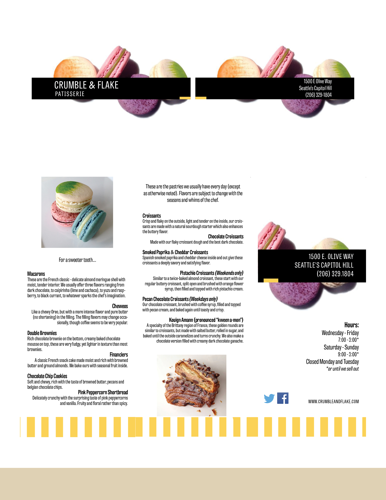

Technical Writing & Editing | Usability Testing
Client: Kaiser
Worked in a team to provide client with an optimal solution through revised documents intended to replace ineffective and unsafe references. Our goal was to create an accessible document and demonstrate its ability to be understood by all levels. Please click the image to view the entire PDF.


Technical Writing | Grant Writing
Client: Spokane Neighborhood Action Programs (SNAP)
Applied for two grants on behalf of a local non-profit organization, following rigid constraints and professional exhibition. Please click the image to view the entire PDF.


Advertising, Commericial Printing & Design | Leader Designer
Internship: Healthy Tekoa Coalition, WA State Department of Social & Health Services
Created posters, billboards, and promotional materials focused on reducing substance use among teenagers, promoting healthy choices, and representing the volunteer organization positively. Maintained consistent use of social norms to appeal to youth and adults in the schools and community. Please click the image to view the entire PDF.


Marketing Materials | Visual Communication Design
Coursework: Crumble & Flake
Maybe some text will go here explaining what's up, who knows!

Typography | Visual Communication Design
Coursework: Elementary School Poster
Maybe some text will go here explaining what's up, who knows!
Resume
Yoooooooooooooooooo